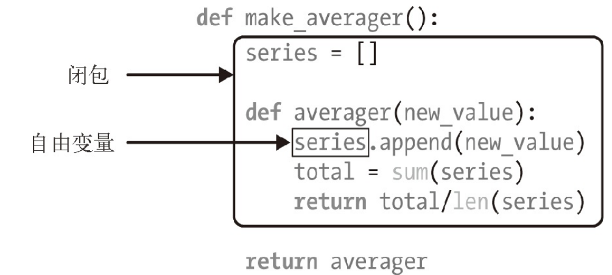

闭包是延伸了作用域的函数。
闭包能访问定义体之外定义的非全局变量。
自由变量是指 未在本地作用域中绑定的变量 。如下图：

虽然
series
是在
averager
函数外定义的变量，但是闭包延伸到
averager
函数之外，包含自由变量series的绑定。
综上，闭包是一种函数，它会保留定义函数时存在的自由变量的绑定，在调用函数时，可以继续使用这些绑定。
注意： 只有嵌套在其他函数中的函数才可能需要处理不在全局作用域中的外部变量 。